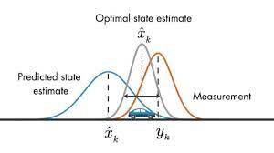
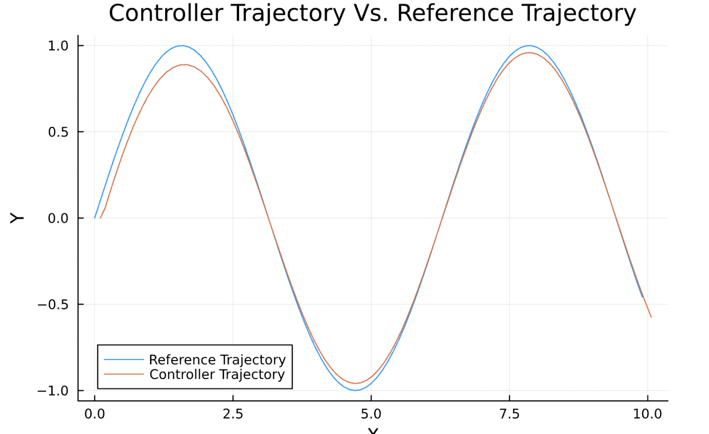
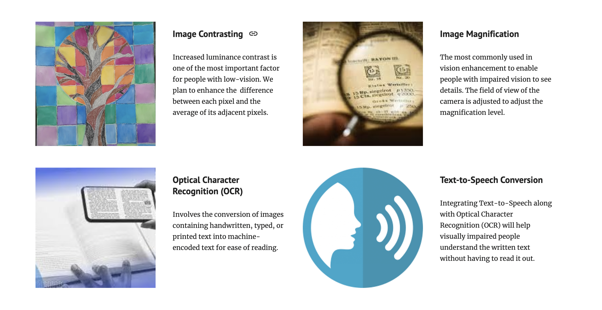

Education
University of Wisconsin, Madison
Expected Graduation: May 2024
GPA: 3.87/4.0
Major: Computer Science and Data Science
WORK/RESEARCH EXPERIENCE
Simulation-Based Engineering Lab at UW Madison
Undergraduate Researcher
January 2022 - Present | Madison, WI
Working along with grad students on topics related to Robotics, using the high-fidelity physics based simulation engine called Project Chrono, under Professor Dan Negrut.
- Using the physics-based high fidelity simulator called Project Chrono to mitigate the Sim-To-Real gap.
- Developing and researching state-estimation and control algorithms for robotics and autonomy.
- Actively developing low-fidelity vehicle models for applications in state-estimation, controls, and ML.
National University of Singapore
Robotics Research Intern
May 2022 - July 2022 | Singapore
- Worked in the Mechatronics and Simulation Lab and researched and developed path-planning algorithms on a Locobot WX250s.
- Created a docker container and embedded it with the Locobot packages to create a uniform system for all users.
- Implemented NLP to make the robot listen to human voice command and perform actions through ROS topics.
Synechron
AI/ML Research Intern
May 2023 - August 2023 | Charlotte, NC
- Researched and implemented various LLMs to understand their working and efficiency.
- Worked on creating a NLP Query Engine based off of a LLM to improve the efficiency of operational tasks for various bank clients.
- Developed a highly scalable solution for the conversion of unstructured data into a structure form using Computer Vision algorithms like OCR.
Wisconsin Autonomous
AV Infrastrure Lead
September 2020 - Present | Madison, WI
Leading 40 graduate and undergraduate students to implement autonomy for racing and urban driving scenarios under Dr. Glenn Bower.
- A 4-year long competition to develop level 4 autonomy on a Chevrolet Bolt EUV for urban driving scenarios.
- Implemented an Extended Kalman Filter along with sensor calibration of the IMU/GPS for state-estimation.
- Developed a HD Map ROS2 based service to work with HD Maps for localization in the absence of a GPS signal.
- Continually developing the software infrastructure for Perception-Controls data transfer and communication.
- Previously particpated in the EV Grand Prix in 2022 and stood 3rd out of the 5 teams that participated.
Comp Sci 300 - Introduction to Object Oriented Programming
Undergraduate Teaching Assistant
Fall 2022 | Madison, WI
- Assisted in the functioning and development of the course.
- Conducted biweekly office hours for over 500+ students, helping them solve their doubts.
- Helped students understand concepts like Abstraction, Polymorphism, and Inheritance through programming assignments designed to be completed using Java.
PROJECTS

Autonomy State Controls | ME468
Spring 2022 | Madison, WI
- Team of 2 designed and implemented an autonomy stack consisting of state-estimation and control algorithms in simulation.
- Developed a Kalman Filter for state-estimation purposes based on random initial states of the vehicle.
- Developed a PID controller as the control policy on the vehicle.

Path Planners | CS524
Spring 2023 | Madison, WI
- Team of 2 designed and implemented two control policies, PID and MPC, for comparison and evaluation purposes on a 2D bicycle model.
- Implemented both the policies on different trajectories for urban driving scenarios like obstacle avoidance.
- Implemented both the policies as optimization problems in Julia.

Low Vision Virtual Reality Toolkit | CS639
Fall 2022 | Madison, WI
- Developed a toolkit to help with low-vision problems in a 4 member team.
- Implemented 4 functionalities - Magnification, Contrast, OCR, and text-to-Speech.
Publications
[1] Zero-Shot Policy Transferability for the Control of a Scale Autonomous Vehicle. arXiv preprint arXiv:2309.09870, 2023.
[2] Using simulation to design an MPC policy for field navigation using GPS sensing. arXiv preprint arXiv:2304.09156, 2023.
[3] A software toolkit and hardware platform for investigating and comparing robot autonomy algorithms in simulation and reality. arXiv preprint arXiv:2206.06537, 2022.
[4] An Overview of a Framework for Designing Robot Autonomy Stacks in Simulation.
[5] A Case Study of the Sim-to-Real Gap When Designing PID and MPC Controllers in Simulation.